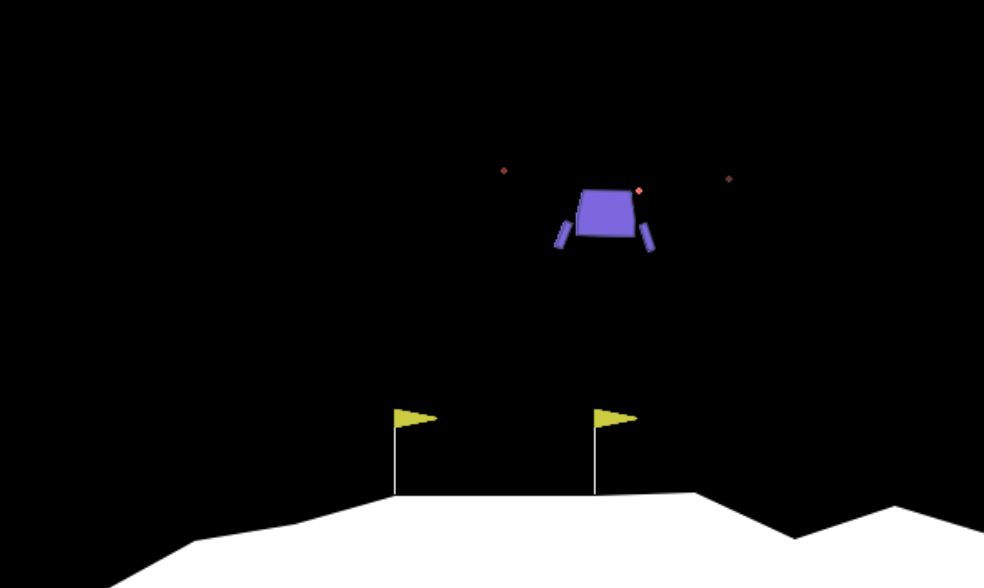
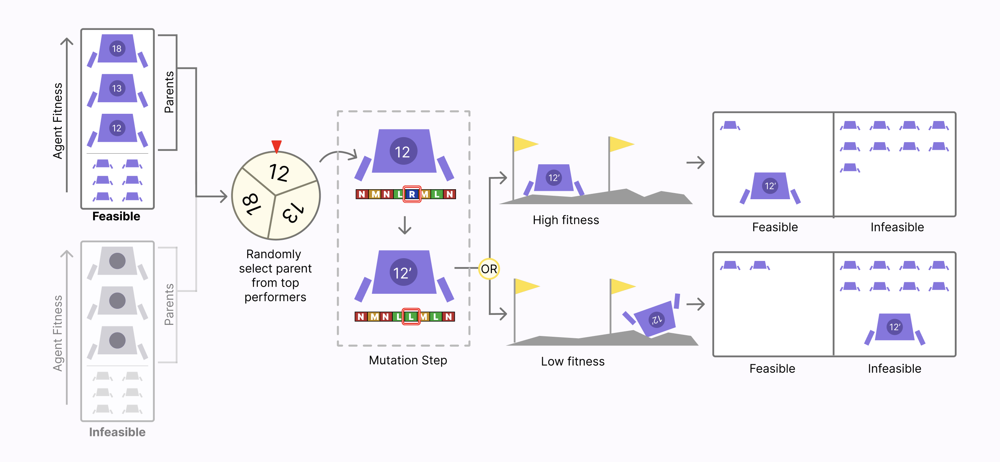
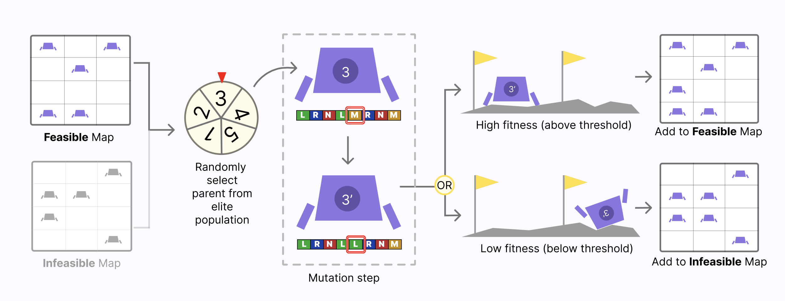

Exploiting Failure in Evolution
Position: Undergraduate Researcher
Institute: Soros Lab, Summer Research Institute
Duration: May 2024 - May 2025
Tools: Python (NumPy, multiprocessing, heapq), Matplotlib/Seaborn, OpenAI Gymnasium, Git
SWE Highlights
- Scalable experiment framework: modular runners for RS, ES, MAP-Elites (+mortality), FI-2Pop, and FI-2Pop with MAP-Elites.
- Performance: Python
multiprocessing, batched rollouts (≈6.7× output speedup).
- Algorithmic engineering: mortality in MAP-Elites; FI-2Pop with MAP-Elites (novel variant).
Overview
Algorithms typically try to minimize errors and failures. However, this research seeks to challenge this paradigm by investigating the
potential advantages of failure. We explore failure-preserving evolutionary algorithms in the
context of the Lunar Lander game environment, where the purple lander is the agent.
Variants of FI-2Pop in the Lunar Lander environment are tested whether preserving “failed”
individuals improves evolutionary search, revealing reward-hacking behaviors.

Methods
We ran these algorithms with 100,000 agents and selected the highest fitness agents:
- Random Search (RS): (baseline 1) Search a randomly-initialized group of agents.
- Evolution Strategy (ES): (baseline 2) Over successive generations, regenerate the entire population by mutating the previous generation’s fittest agents.
- MAP-Elites: Maintain “elites”, which represent the fittest agents of a feature niche in a 2D map. + mortality: old agents are removed from the map
- FI-2Pop: Modify ES by maintaining two populations (feasible/infeasible) based on some fitness-based threshold.
-

- MAP-Elites with FI-2Pop: Modify MAP-Elites by maintaining two feature maps (feasible/infeasible).
-

Findings
- Best agents routinely exceeded fitness 200; a characteristic “tap-dancing” reward hack maximized score without landing between flags.
- Top-performing agent achieved a fitness score of 237.278 with endpoint features
(0.591, −0.215).
- Aggregated heatmaps of elites across 20 trials revealed distinct coverage patterns for each evolutionary method (see poster figure set).
Key Contributions
- Added mortality to MAP-Elites; implemented heap-based parent selection for ES; built reproducible visualization pipelines.
- Parallelized evaluations with Python
multiprocessing, achieving approximately 6.7× faster trial throughput.
- Validated RS/ES/MAP-Elites baselines against prior results to ensure correctness.
Poster
Presented a research poster at the Lida Orzeck '68 Poster Session at Barnard College on July 31, 2024 and
at the Barnard Computer Science Senior Research Symposium on April 25, 2025.
View Research Poster (PDF)